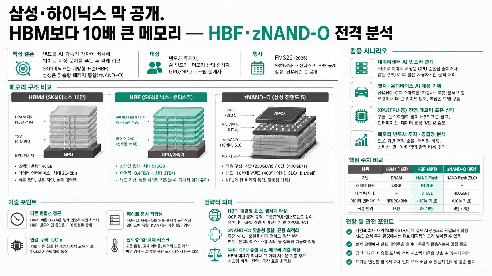

FMS26에서 SK하이닉스·샌디스크는 낸드를 데이터센터 메모리 계층으로 끌어올린 공개 표준 HBF(스택당 최대 512GB)를, 삼성은 낸드와 NPU를 한 패키지로 묶는 맞춤형 통합 구조 zNAND-O(초당 최대 400GB)를 각각 제시하며 같은 낸드에서 서로 다른 답을 내놓았다는 분석.

01핵심 개요
항목
내용
주제
HBM보다 10배 큰 신규 메모리 계층 — HBF(SK하이닉스·샌디스크)와 zNAND-O(삼성)
발표자/채널
안될공학(패치) — IT 테크 신기술 채널
핵심 결론
낸드를 AI 가속기 가까이 배치해 웨이트 저장 문제를 푸는 두 갈래 접근 — SK하이닉스는 개방형 표준(HBF), 삼성은 맞춤형 패키지 통합(zNAND-O)
대상
반도체 투자자, AI 인프라·메모리 산업 종사자, GPU/NPU 시스템 설계자
02핵심 기능/내용 구조
SK하이닉스 16단 HBM4는 스택 하나에 48GB, 반면 SK하이닉스·샌디스크가 FMS26에서 공개한 HBF는 스택 하나에 최대 512GB 제시 — HBM 10개(480GB)보다 큰 용량을 스택 1개에 압축
HBF는 디램이 아니라 낸드 플래시 기반 "High Bandwidth Flash" — 8단 또는 16단 적층, 초당 0.4TB~최대 3TB 성능 제시
삼성은 같은 행사에서 10세대 낸드를 NPU와 한 패키지로 묶는 zNAND-O(진앤드 5) 공개
SK하이닉스는 낸드를 데이터센터의 새로운 메모리 계층으로, 삼성은 낸드를 특정 NPU·모델에 맞춘 통합 패키지로 각각 다르게 활용
HBM 구조: 얇은 디램 다이를 여러 장 쌓고 TSV로 수직 연결한 스택 하나가 GPU 주변에 붙는 단위
HBF 구조: 디램 대신 낸드 다이를 8~16단 적층, 베이스 다이가 낸드의 약점(느린 응답)을 감추고 메모리처럼 보이게 하는 역할 수행
03기술적 맥락
프런티어 모델 실행 시 학습된 가중치(웨이트)를 메모리에 올려야 하는데, 모델이 커질수록 웨이트가 GPU 한 장의 HBM에 다 들어가지 못해 여러 GPU에 나눠 담고 통신하는 구조가 됨 — 이때 GPU 증설 이유가 연산량이 아니라 메모리 용량 부족인 경우 발생
HBM과 HBF는 둘 다 병렬 메모리지만 병렬성을 쓰는 방식이 다름: HBM은 빠른 디램을 넓게 연결해 지연시간을 낮추면서 고대역폭도 확보, HBF는 낸드의 긴 응답시간을 그대로 안고 가는 대신 여러 다이에 읽기 요청을 미리 보내 큰 데이터 묶음을 동시에 받아 전체 처리량을 높임
첫 데이터 도착 속도는 HBM이 압도적으로 빠름 — HBF는 웨이트처럼 읽는 순서가 규칙적인 데이터에 적합
HBM4는 GPU와 연결되는 데이터 인터페이스가 2048비트까지 확장
낸드를 가속기 가까이 연결하기 위한 규격이 UCIe(Universal Chiplet Interconnect) — 서로 다른 칩을 한 패키지 안에서 연결해 하나의 시스템처럼 동작하게 하는 공통 규격, 칩 간 고속 연결 규칙
삼성 zNAND-O는 400단 이상 10세대 V낸드를 SLC(셀당 1비트) 방식으로 사용 — TLC(8단계)·QLC(16단계) 대비 용량은 줄지만 읽기 속도와 안정성 확보
KV캐시(대화 문맥의 중간 결과 저장 공간)는 계속 생성·삭제가 반복돼 낸드의 "덮어쓰기 불가, 빈 공간에 기록 후 정리" 특성과 상성이 나쁨 — 낸드는 상대적으로 안 바뀌는 웨이트에서 먼저 경제성을 증명하고 KV캐시로 확장하는 흐름이 자연스러움
04전략적 의미
HBF의 가치는 "SSD보다 빠른 저장장치"가 아니라 프런티어 모델에 필요한 GPU 시스템을 얼마나 줄일 수 있는가, 또는 같은 시스템으로 얼마나 더 많은 요청을 처리할 수 있는가에 있음 — 고객은 시스템 전체 비용으로 평가
SK하이닉스·샌디스크는 OCP를 통해 HBF를 공개 규격으로 추진 중이며, FMS26에서 구글(TPU)과 텐스토렌트가 HBF 표준 개발 참여를 공개 — 엔비디아 GPU 전용이 아니라 다양한 XPU 생태계 표준으로 확장 가능성 확보
삼성 zNAND-O는 범용성 대신 특정 NPU·모델을 미리 정하고 낸드 배치와 NPU 계산 흐름을 함께 최적화하는 통합형 접근 — 스마트폰·홈허브·자동차·로봇·산업용 영상 장비·소형 엣지 서버처럼 정해진 기능을 반복 수행하는 제품에 적합
두 회사 모두 HBM을 대체하려는 게 아니라 그 아래에 새로운 메모리 계층을 추가해 "웨이트를 담기 위해 GPU를 계속 늘리기만 하던 구조"를 바꾸려는 방향
낸드 사용이 곧 저렴함을 의미하지 않음 — 400단급 낸드, TSV 베이스다이, UCIe·첨단 패키징 비용이 더해지고, SLC 선택 시 QLC 대비 저장 용량이 최대 1/4 수준으로 감소
신뢰성 리스크: 낸드가 연산칩과 한 패키지로 고정되면 교체가 어려워지고, 뜨거운 가속기·NPU 열에 노출되며 데이터 보존 특성이 저하 — 예비 영역 이전, 부분 용량 포기 운용, 외부 저장장치 재적재 대응 필요
삼성은 과거 zNAND·zSSD로 디램-SSD 사이 시장을 시도했으나 비싼 가격·제한된 이점으로 큰 시장 형성에 실패한 전례 — 이번엔 AI 모델 대형화로 HBM 용량이 시스템 비용의 병목이 된 만큼 상황이 다름
05핵심 워크플로우/방법론
단계
SK하이닉스·샌디스크 HBF
삼성 zNAND-O
1. 설계 전제
여러 XPU·다양한 모델이 공용 사용
특정 NPU·모델을 미리 확정
2. 메모리 배치
개방형 표준으로 OCP 통해 규격화
낸드·NPU를 한 패키지로 통합 설계
3. 최적화 방향
범용성과 생태계 확장(구글 TPU·텐스토렌트 참여)
모델 구조·웨이트 읽기 순서에 맞춘 전용 최적화
4. 목표 성능
스택당 최대 512GB, 초당 최대 3TB
4단 적층 초당 200GB, 8단 적층 초당 400GB
5. 검증 포인트
실제 모델이 대역폭을 얼마나 꾸준히 활용하는가
정해진 모델에서 시스템 전체 비용·전력 절감 효과
06활용 시나리오
데이터센터 AI 인프라 설계: HBF 채택으로 웨이트 저장용 GPU 증설을 줄이거나, 같은 GPU 묶음으로 더 많은 사용자 요청·긴 문맥을 처리하는 용량 재배분 검토
엣지·온디바이스 AI 제품 기획: zNAND-O 방식으로 스마트폰·자동차·로봇·홈허브 등에서 클라우드 의존 없이 더 큰 웨이트를 로컬 탑재해 복잡한 음성·영상 모델 구동
XPU(TPU 등) 진영의 메모리 표준 선택: 구글·텐스토렌트 참여 사례를 참고해 개방형 HBF 표준 채택 여부와 인터페이스·데이터 흐름 정합성 검토
메모리 반도체 투자·공급망 분석: SLC 기반 저장 효율, 첨단 패키징 비용, 낸드 열화·신뢰성 대응 방식(예비 영역 관리)을 시스템 비용 관점에서 추적
07현황 및 전망
FMS26(2026년): SK하이닉스·샌디스크가 HBF 첫 규격 공개(스택당 최대 512GB, 초당 0.4~3TB), 삼성이 10세대 V낸드 기반 zNAND-O(진앤드 5) 공개
HBF 표준화: 초기엔 메모리 업체 중심이었으나 FMS26에서 구글·텐스토렌트의 HBF 표준 개발 참여가 확인되며 XPU 생태계로 확장 신호
다만 사양표상 최대 대역폭(초당 3TB)이 실제 AI 성능으로 직결되지는 않음 — MoE 모델처럼 토큰마다 다른 전문가 웨이트를 선택하거나 요청이 뒤섞이는 환경에서는 유효 대역폭이 사양표 대비 크게 낮아질 수 있음
향후 관전 포인트: 실제 모델에서 발표 대역폭을 얼마나 활용하는지, 첨단 패키징 추가에도 전체 시스템 비용을 낮출 수 있는지, 뜨거운 연산칩 옆에서 교체 없이 오래 버틸 수 있는지
두 회사 모두 HBM을 대체하지 않고 그 아래 새로운 메모리 계층을 추가하는 방향으로 수렴 — 낸드가 단순 저장장치에서 AI 연산을 뒷받침하는 메모리로 재정의되는 흐름
08용어 사전
용어
설명
HBF
High Bandwidth Flash, 낸드 플래시를 적층해 만든 데이터센터용 고대역폭 메모리(SK하이닉스·샌디스크 공개 표준)
zNAND-O(진앤드 5)
삼성의 10세대 V낸드를 NPU와 한 패키지로 묶은 맞춤형 통합 메모리 구조
UCIe
Universal Chiplet Interconnect express, 서로 다른 칩을 한 패키지 안에서 연결하는 공통 고속 인터커넥트 규격
SLC/TLC/QLC
낸드 셀 하나에 저장하는 비트 수(1/3/4비트)에 따른 구분 — 비트 수가 적을수록 속도·안정성은 높고 용량 효율은 낮음
KV캐시
AI 대화의 문맥 중간 계산 결과를 저장해 재계산을 줄이는 공간, 대화가 길어질수록 계속 생성·삭제됨
베이스 다이
스택 하단에서 데이터 통로·신호를 제어하는 로직 칩, HBF에서는 낸드의 응답 지연을 감추고 메모리처럼 동작하게 하는 역할까지 수행
09딥링크
00:00 HBM 스택 구조와 HBF의 등장 — SK하이닉스 16단 HBM4 48GB vs HBF 스택당 최대 512GB